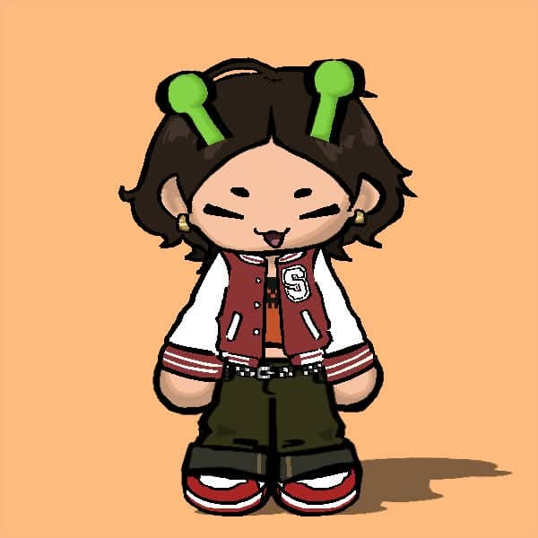

![]()
Welcome to #-@8$&62#!!!!
YOOOOOOOO!!! Hiiiiiiiiii there :3 Welcome to my own little corner here in our digital world!! Haveee fun!! ^^
MY CHARACTER PROFILE

Avatar created using Picrew :3
NAME: NATALIE ANN H. TRABIZONDA
CLASS: BS COMPUTER SCIENCE
SPECIES: UNKNOWN
CHARACTERISTIC: FREE SPIRITED CURIOUS SOUL WITH A BIG DREAMS. :3
MORE ABOUT ME
My player status!!! ^^
| Category | Value |
|---|---|
| Level | 1 |
| Main Class | Computer Science |
| Completed Quests | 10+ |
| Current Quest | 3 |
| Experience Points | 180 XP |
My Hobbies
- Watching anime
- Listenning to music
- Doodling
- Daydreaming
- Sky/Stargazing
- Taking random quizzes (entertainment purposes)
INVENTORY & FAVORITES
MY INTERESTS
- Anime/Manwha
- Pixel arts
- Farming Pixel games
- Coding
- Puzzles
MY FAVORITE WEBSITES & APPS
Here are some websites and applications I enjoy using.


CURRENT AND FUTURE QUESTS
MY TOP 3 QUESTS
- Survive college!
- Improve my skills.
- Create something of my own.
My Top 3 Goals
- Travel somewhere
- Repay my loved ones ^^
- Have fun!! :3
MY PATH INTO COMPUTING
I've first become interested in computer back in grade 7 as HTML and
CSS were being taught to us. It made me more curious about how it
works and what programming languages are used to make games as well.
With this curiosity, it lead me to this program, which is Computer
Science.
The first time I heard of it, I knew it would involve a lot of coding
and problem-solving but I didn't fully understand what I was getting
myself into. What I find challenging the most was having patience
throughout the process of doing my own code. But at the same time,
being able to make your code works feels like an achievement even if
it's the simplest code you could ever make. I guess that's also why I
chose this program, because it reminds me that every small step and
every little achievement is worth celebrating for.
REFLECTION
Making this webpage made me realize that I've actually learned more
about HTML and CSS than I initially thought. Compared to my first
About Me activity, I became more familiar with how to organize my
content and customize the appearance of my webpage. I also got to
experiment with different styles and ideas instead of just making a
simple page.
One thing I enjoyed was being able to make the design reflect my
interests and personality. I went with a pixel-game theme because I
wanted my webpage to feel like my own little world. Of course, it
wasn't always easy. There were times when my code wouldn't work the
way I wanted it to, and I had to go back, check, and figure out what
was wrong. But I guess that's also part of learning.
Overall, this activity helped me understand that making a website
isn't just about knowing how to code. It also takes creativity,
patience, and a lot of trial and error. I still have plenty of things
to learn, but I'm glad I got to see my ideas slowly turn into
something I can actually call my own.